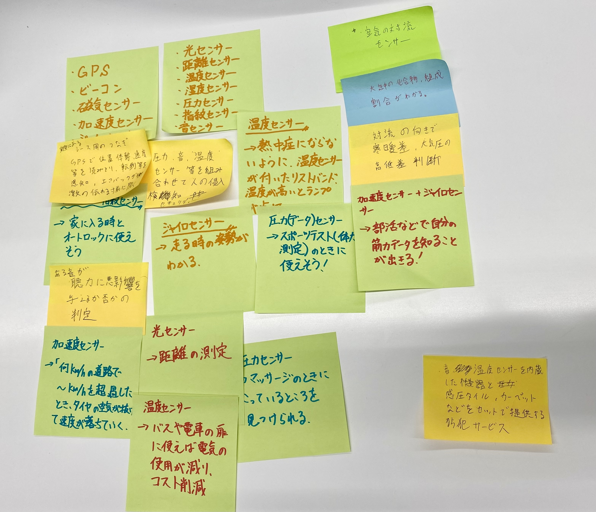
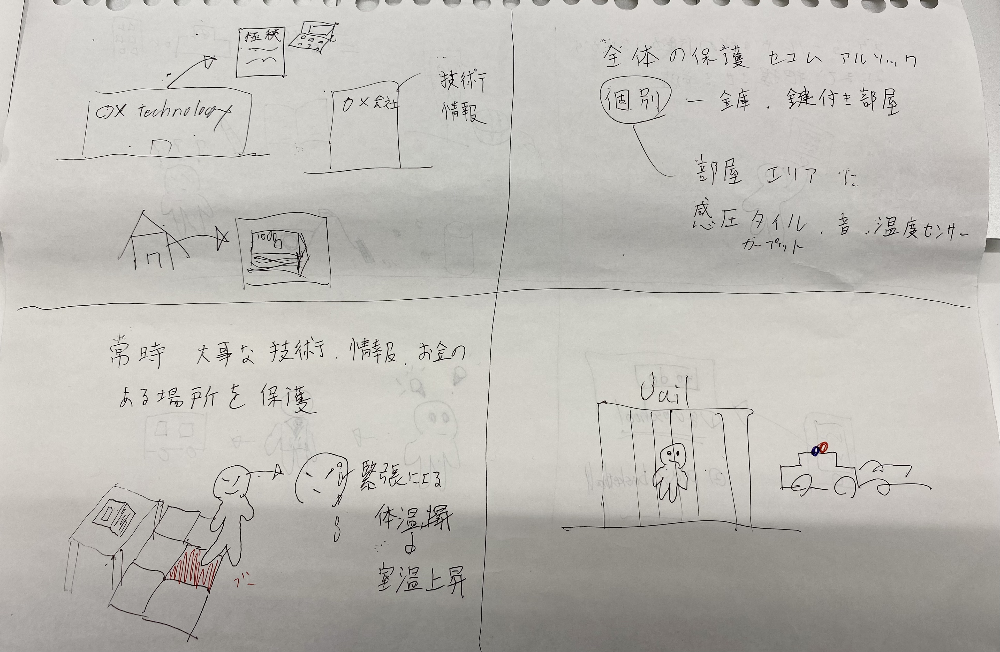

データを集めることで、何ができるか？に関して
センサー関連でグループワークした内容

温度センサー、音響センサー、加速度センサー、圧力センサーなどのよく耳にする
センサー類が多く上がりました。GPSも目立ちました。
アイデアスケッチ

これは会社にある大事な技術、情報、社外秘の資料を含むpcやそのものであったり家にある高価で貴重なものなどを守るサービスであります。
建物の全体の保護はセコムやアルソックなどに任せます。個別の保護として、金庫や鍵付き部屋がありますが
そこに追加する形で部屋やエリアに感圧タイルやカーペットを敷き、音、温度センサーを設置することで侵入者による部屋の状態変化を探知し、
警備会社に通報が入ったり閉じ込めたりあらゆるセキュリティー機能が作動するシステムです。